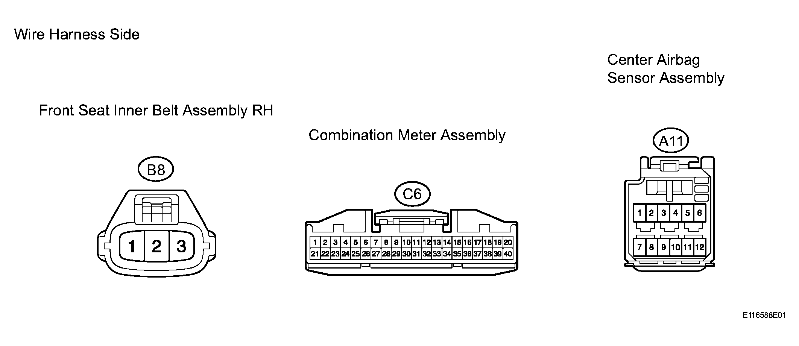
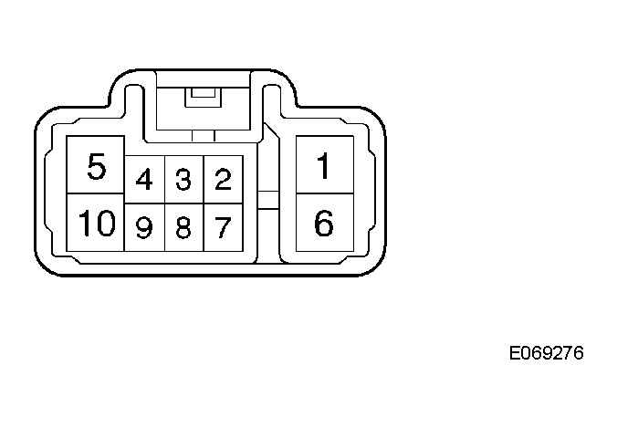
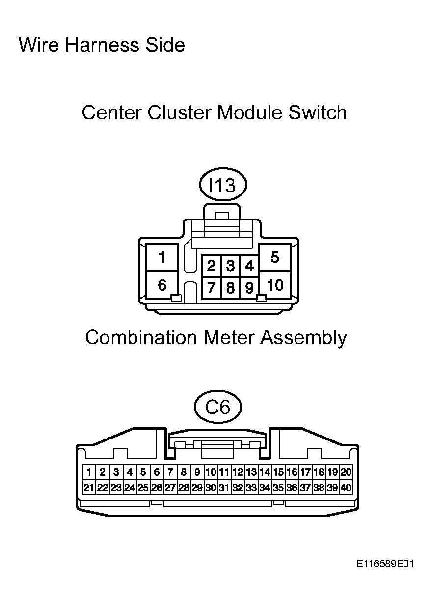

Inspection Procedure
- INSPECT FRONT SEAT INNER BELT ASSEMBLY RH
- Remove the front seat inner belt assembly RH.
- Measure the resistance of the belt's connector.
Standard resistance
TESTER CONNECTION SPECIFIED CONDITIONTester Connection Switch Condition Specified Condition 1 - 3 Front passenger seat is occupied and front passenger side seat belt is unfastened 300 to 360 Ω Front passenger seat is occupied and front passenger side seat belt is fastened 1,200 to 1,460 Ω
NG : REPLACE FRONT SEAT INNER BELT ASSEMBLY RH
OK : Go to Next Step
- CHECK WIRE HARNESS (FRONT SEAT INNER BELT - COMBINATION METER AND AIRBAG SENSOR)

Courtesy of © TOYOTA, LICENSE AGREEMENT TMS1002- Disconnect the B8 belt connector.
- Disconnect the C6 meter connector.
- Disconnect the A11 sensor connector.
- Measure the resistance of the wire harness side connectors.
Standard resistance
TESTER CONNECTION SPECIFIED CONDITIONTester Connection Specified Condition B8-1 - A11-12 Below 1 Ω B8-2 - A11-8 B8-3 - C6-33
NG : REPAIR OR REPLACE HARNESS AND CONNECTOR
OK : Go to Next Step
- INSPECT CENTER CLUSTER MODULE SWITCH
- Disconnect the I13 switch connector.
- Apply battery voltage to the center cluster module switch and check the operation of the switch.
OK
TESTER CONNECTION SPECIFIED CONDITIONMeasurement Condition Specified Condition Battery positive (+) --> Terminal 9
Battery negative (-) --> Terminal 1Front passenger side seat belt warning light turns on.
NG : REPLACE CENTER CLUSTER MODULE SWITCH

Courtesy of © TOYOTA, LICENSE AGREEMENT TMS1002OK : Go to Next Step
- CHECK (CENTER CLUSTER MODULE SWITCH - COMBINATION METER AND BODY GROUND)
- Disconnect the I13 switch connector.
- Disconnect the C6 meter connector.
- Measure the resistance of the wire harness side connectors.
Standard resistance
TESTER CONNECTION SPECIFIED CONDITIONTester Connection Specified Condition I13-9 - C6-35 Below 1 Ω I13-1 - Body ground
NG : REPAIR OR REPLACE HARNESS AND CONNECTOR

Courtesy of © TOYOTA, LICENSE AGREEMENT TMS1002OK : REPLACE COMBINATION METER ASSEMBLY